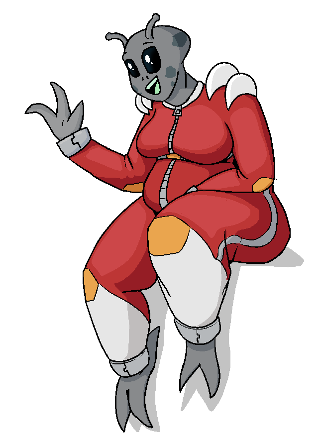

Nova
Nova | |
|---|---|
|  | |
| Full Name | <???> |
| Pronouns | She/Her |
| Species | <???> |
| Age | <???> |
| Height | 185cm / 6'1" |
| Occupation | Streamer |
| Relationships | Ping He - Friend, Stream Moderator |
| Favorite Earth Food | Hamburgers |
| Longest Stream | 36h23m |
"Y'know how girls go to jupiter to get more stupider? Well I'm BACK!"
Backstory
Nova used to live on a distant planet as a spacecraft mechanic, servicing all kinds of spaceships. Eventually, she saved enough to pursue her real interest - buying a beat up old UFO, fixing it up, and flying around the galaxy. A few months into her trip, she landed on Earth to make a pit stop. While she was there, she realized she really liked the place. The people, the scenery, the food especially. So, she decided to hunker down and hang around for a while.
Her ship provides everything she realistically needs to survive, but she socializes with others through streams she puts on, which tend to focus on chatting, playing games sometimes, and reviewing restaurants and food. She likes to wear her old mechanic outfit during the streams - it's surprisingly comfortable, and gives her a distinct look.
Unfortunately, as much as she'd just like to hang around and have a good time, being the only extraterrestrial on Earth attracts the attention of several organizations who want to capture, study, and in the worst cases kill her. She's managed to evade them for the most part, but their constant harassing of her leads her to be colder towards people she's unfamiliar with as a defense mechanism.
Character
Nova is easygoing and friendly to most, but years of being pestered about her alien identity has lead her to take on a slightly abrasive, noncommital attitude towards strangers. It's not too hard to get past it though - asking her about her interests and hobbies tends to help her open up. She's aware she's put this guard up all the time, and doesn't like it, but what can you do.
On stream and in public, when people ask her about her alien nature, she's quick to just lie to them. Usually in a really obvious way - it's less she wants to mislead others, and more she's just sick of answering the same questions over and over.
Trivia
- Nova's species is the only other species in the entire galaxy with a humanoid body plan. They eat the same types of foods, breathe the same atmosphere, are roughly the same size, have similar biologies - it's a wild coincidence.
- Nova frequently refers to her 'mods' on stream when dealing with bad actors. The plural is just an intimidation tactic - she's only got one.